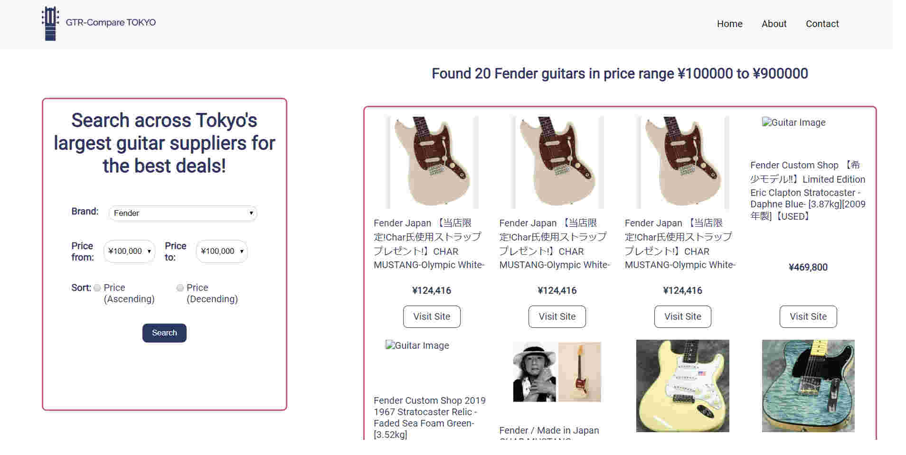

Guitar Compare TOKYO
hey!
I'm a freelance web developer based in Japan. I love making sites that do interesting things, from back to front. I do my best to adhere to best practices and give my sites a bit of creative flair.
I offer translation services for Japanese to English as well.
Oh, and I play guitar a lot in my spare time. Do check out my stuff!
![]()
projects

X
Guitar Compare TOKYO
One of the first sites I created as a hobby project to practice web scraping. The site scrapes several major guitar stores in Tokyo and allows the user to compare a range of guitars with ease. Users can sort by different brands and by price range as well. Once they find a guitar they are interested in, they can access a link to the product page directly. The site updates every 24 hours, creating, updating and deleting records as necessary. It was a great project to practice using an unfamiliar library and to try and integrate it within the Django framework.
Key features:
- Users can search and compare guitar prices from several major guitar retailers in the Tokyo region.
- Simple filtering options (price, brand).
- Automatically updates records every 24 hours
- Responsive design.
Django
Python
HTML/CSS/Javascript
X
TAGA Online
A guitar school in central Tokyo with around 300 students was having difficulty with their scheduling system. They had previously relied on Google Calendar, but found that the school had grown to such a number that they had trouble finding an efficient way to display teachers and students' schedules. Additionally, there was no system in place to handle rescheduling; as such, the school was constantly inundated with rescheduling requests, wasting the time of the administrative staff.
With these problems in mind, I set out to create TAGAOnline, a system for the school that could be used by admin staff, teachers and students. Now, the administrative staff can navigate lessons much easier, teachers can view their own private schedules and students are able to reschedule their lessons with any teacher and at any time they wish.
The site is currently in use by The American Guitar Academy in Roppongi, Tokyo.
Key features:
- Rescheduling system for students. Students are able to reschedule their own lessons with any teacher. The system ensures that their chosen lesson does not clash with another students' lessons, as well as several other checks.
- Teachers can view their own private schedules, updated to reflect any changes.
- Admin staff can perform standard CRUD operations for lessons using a clean and intuitive interface.
- Search function to find a student and their corresponding lessons. The system also informs the staff if the student has missed their last 3 lessons.
- Automatic emails for both students and admin staff when a student makes a reschedule.
Django REST Framework
VueJS
Vuetify
X
KanjiQuiz
KanjiQuiz is a simple e-learning site for teachers to administer Kanji (Japanese character) quizes to students. I created this site to practice using a low level framework (Flask) and to implement my own authentication.
Some features that make the site stand out include several statistics for teachers to assess their students. In particular, KanjiQuiz is able to calculate which kanji are easiest and hardest for students and display this in the teacher dashboard. The site also features a simple question/answer system on each quiz, so that students can ask questions and teachers can respond.
Even with the use of several libraries it was a challenging site to create, but I learned a lot from it.
Key features:
- JWT Authentication.
- Basic statistics for teachers, including % of sentences correct/incorrect and also which characters are easiest and most difficult for students.
- Simple question/response system for students to ask questions on a particular quiz.
- Admin system to create new classes，new students and new teachers.
Flask
VueJS